From AI that speeds up individual work, to AI that cuts lead time across the organization.
Writing and analyzing documents has gotten faster. But from a customer's request to the final decision and completed execution, how much faster has your organization's work become?
Process GPT connects people, AI and existing systems into one End-to-End process. It finds the handoff and decision bottlenecks between departments and turns individual time savings into results for the whole organization.
Individuals have gotten faster, so why does the organization's work still take so long?
Organization-wide lead time is the time that elapses from when work starts until the final decision is made and execution is complete. Even if individual tasks get shorter, overall improvement stays limited while waits remain on the path that decides when work finishes, the critical path.
Within the taskActual processing
Writing documents, analysis, system processing
The part personal AI mostly improves
Between departments and systemsHandoff wait
Waiting for hand-over, intake and assignment
Where a judgment is neededDecision wait
Waiting for review, approval and exception decisions
Where work loops backRework
Filling in omissions, re-review, reprocessing
This view breaks down the elapsed time of a single piece of work. For parallel work, times are not simply added up; instead, we look at the path that determines final completion.
Producing a report quickly is not the same as reaching a decision quickly.
Even when sales finishes a proposal, the time it takes to confirm a commitment to the customer does not shrink unless legal review, finance approval and execution by operations are connected. The next owner must receive the information, authority and completion criteria they need.
The gap between AI investment and organizational results: what 40% · 95% · 5% mean
Over 40%
Agentic AI projects expected to be canceled
Gartner projects that over 40% will be canceled by the end of 2027, citing rising costs, unclear business value and inadequate risk controls. This is not a failure rate that has already occurred.
A 2025 preliminary study by Project NANDA reported that 95% of organizations are getting no return, and that 5% of integrated AI pilots are creating significant value. It highlights the gap between individual productivity gains and P&L results, and stresses integration into workflows and contextual learning.
These are projections and studies with different subjects and criteria. They are not a universal failure rate for all AI projects, nor do they mean that missing process connections are the only cause of failure. Process GPT approaches this performance gap from the perspective of organization-wide lead time and process connection.
02 · THE SOLUTION
With End-to-End orchestration, we connect the start of work to its final result.
Process GPT is an execution platform that carries each agent's answer forward into the next department's decisions and execution. It designs connection, decision-making, exceptions and measurement together to relieve bottlenecks in overall lead time.
01 · Connection
Turn handoffs between departments into a process
The output of one step becomes the input for the next person and system. Who picks it up and when it is complete are defined in a single flow.
Decisions that come with their evidence and accountability
AI organizes the context, rules apply clear criteria, and people make the important decisions. The information needed for review and the approval path are placed inside the work itself.
When something is missing or rejected, or an integration fails, it sets who fills the gap and how the work is reprocessed. Exceptions are managed as work status instead of being left in someone's inbox.
From the recorded execution history, it breaks down the processing and waiting of people and agents. It finds bottlenecks on the critical path and compares overall lead time, rework rate and quality before and after a change.
The measure of successNot when the AI finishes its response, but when the organization's work is done.
The goal is shorter overall lead time. While keeping key approvals and quality standards in place, we find the time that can be cut from handoffs and waits.
Integration scope, exception handling and measurable segments are validated against each customer's business rules and system configuration.
Our vision From individual productivity gains to execution results for the whole organization. Knowledge grounds decisions, and processes carry those decisions through to completion. The AI-Native Enterprise vision →
FEATURES
From design to execution, integration, and analysis, organized into seven areas. Click any item to see it with real screenshots.
Process design · Reverse engineeringProduce executable processes from natural language and existing documents
▶Reverse-Engineer Processes from Policy DocumentsBuild executable processes from policy PDFs with human review1 screenshot
ㆍSelect a policy PDF from the Knowledge Base in chat. The Deep Agent presents a draft covering steps, owners, and amount-based approval and rejection paths, along with source documents and page references.
ㆍClick “Approve” on the draft to see suggested agents, skills, and decision tables (DMN) for each step. Only the options a person selects are generated, creating an executable standard BPMN process together with input forms.
ㆍThe generated process is added to the Process Definition Map only when you click “Save”. Compare the generated flow with the original document and describe any discrepancies in natural language to have them corrected.
A draft based on the policy — human approval required to proceed
▶Automatic generation of BPMN processes and business formsDesign BPMN workflows and their input forms together in natural language2 screens
ㆍIdentified processes are visualized as international-standard BPMN diagrams and can be fine-tuned with natural-language prompts.
ㆍThe input forms each task needs (applications, evaluation questionnaires, and so on) are generated automatically and semantically, in keeping with the document's context.
ㆍReference information is wired up automatically so that each step can refer to the output of the previous one.
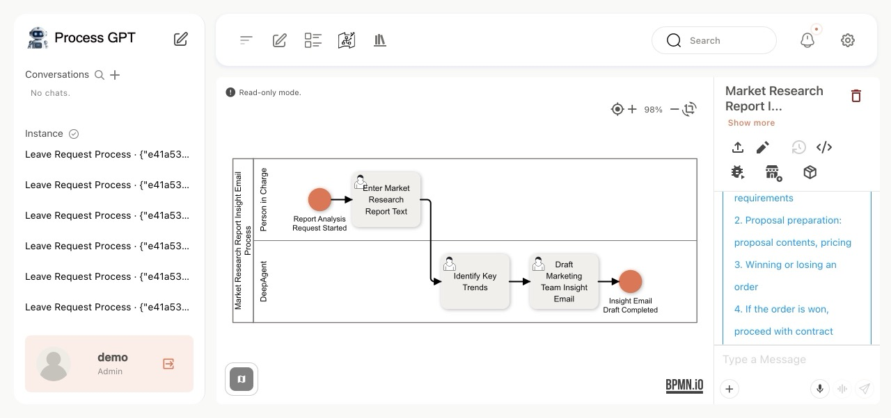
Auto-generated BPMN process
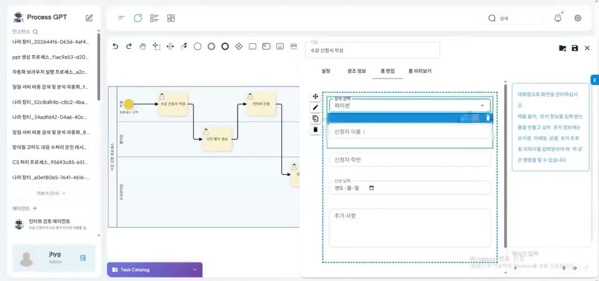
Automatic business form generation
▶Turn a task description into a process where people and agents collaborateReview the draft, then generate BPMN and input forms for each stepDemo video
ㆍIn the home chat, describe the workflow you want to create to Basic Agent in one or two sentences. Review and refine a draft with the process name, steps, flow, and items that need further clarification.
ㆍSelect “Create the process as is” to generate and immediately save a BPMN process with lanes for human and agent roles, along with input forms for each step.
ㆍIn “Simulation”, preview the flow with AI-generated sample values. No actual execution records are created. Request changes conversationally or edit directly in the BPMN modeler.
Agent setup · Knowledge learningDerive who can do what from the org structure and execution history
▶Manage business rules taught in natural language as agent knowledgeCreate Agent Colleagues and review the rules behind their answersDemo video
ㆍIn “Create Agent” on the org chart, describe the agent’s work in one line. AI drafts its name, role, goals, and persona; save it to add the agent as a team member.
ㆍTeach business rules in natural language in “Learning Mode” to record their content and creation dates in “Knowledge Management”. Saved rules can be deleted.
ㆍIn “Query Mode”, the agent answers based on the rules it has learned. Evidence cards show each rule’s original text and similarity score.
ㆍFor each task, separates what people do from what agents do, then finds the right AI agent in the org chart and assigns it automatically.
ㆍIf no suitable agent exists in the org chart, it evaluates whether the task can be agentized, creates a new agent, and maps it.
ㆍOn critical paths that require a final human decision, a human approval step is inserted automatically.
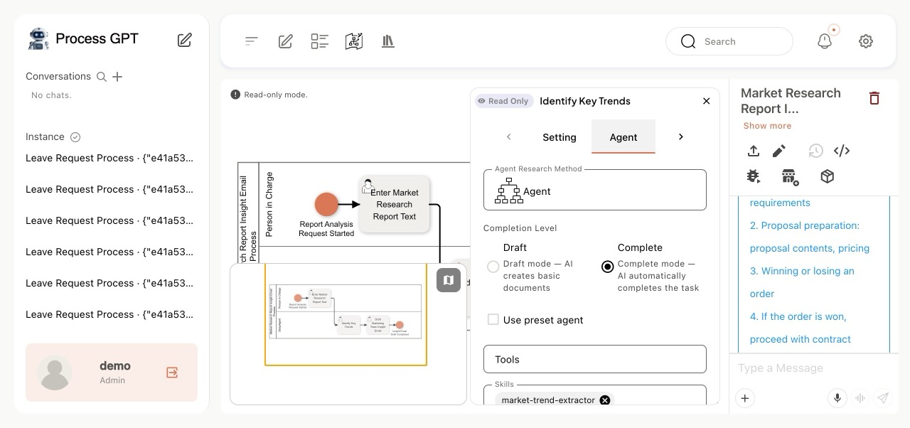
Org-chart-based automatic agent mapping
▶Skill Learning for Autonomous AgentsLearn skills while executing, manage them as versions1 screen
ㆍUser feedback does more than fix a result: it is learned as an agent skill (Anthropic Skills spec) and applied automatically from the next task onward.
ㆍThe skill definition (SKILL.md) and its execution code improve automatically based on feedback, and every change is version-controlled.
ㆍIf you don't like the result of an improvement, 'Revert changes' restores any previous snapshot at any time.
Execution · Human CollaborationAgents execute; people step in where a decision is needed
▶Agents Generate the DraftAgents take it all the way to a draft ready for human reviewDemo video
ㆍCreate multi-agent configurations (Crews) from registered agents; each agent runs autonomously until its goal is met.
ㆍConnect ERP, email, collaboration tools, and other channels over MCP so repetitive work is automated and results are produced as documents.
ㆍA practical, execution-centered process management environment with internal search, office tool usage, and MCP integration.
▶Delegated Agent Execution with Real-Time FeedbackStep in mid-execution and change course2 screens
ㆍDelegate a task with 'Hand to agent' and the agent builds its own plan, then carries it out using knowledge and tools.
ㆍResults are mapped automatically into the task form; users review them and either adopt the result or give feedback.
ㆍA natural-language remark such as "Generate only 3 questions" is enough for the agent to re-plan and apply the change immediately.
ㆍDeep Agents automatically assign the activities within a subprocess to subagents and execute them autonomously. — e.g., foreign-language inquiry intake → translation → review of applicable laws → drafting the reply.
ㆍDuring execution, the agent calls the Ontological Studio MCP (ontology_query) to explore legal knowledge graphs such as the Road Traffic Act and the Framework Act on Building, citing the supporting provisions.
ㆍThe ontology built in Ontology Studio serves as the agent's 'knowledge graph'; because answers are grounded only in explicit knowledge, you get reliable, hallucination-free automation.
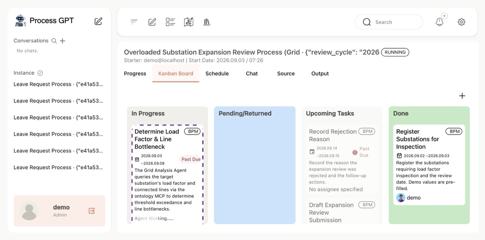
Subprocess kanban board
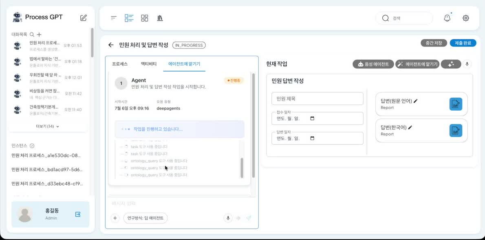
Deep agent exploring legislation via the ontology MCP
▶Deterministic Control with DMN Business RulesPin decisions down in a rule table1 screen
ㆍBusiness rules such as "Approve if the accuracy rate is 60% or higher" are managed as decision tables in the international DMN (Decision Model and Notation) standard.
ㆍThe agent's conditional branching is governed by explicit rules, guaranteeing transparent and consistent automation.
ㆍRules can also be refined continuously through natural-language feedback, so business policies change without touching code.
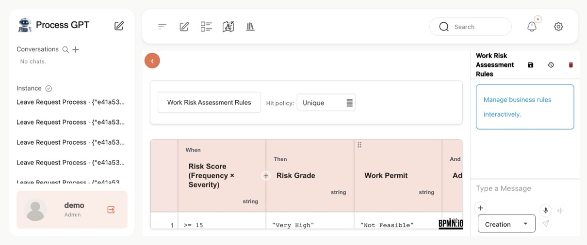
DMN business rule decision table
Solidified Execution · ReproducibilityOnce a task is learned, it runs exactly the same every time — re-executed as code with no LLM inference (Deterministic Replay)
▶Eliminating the Risk of LLM DiscretionSolves the problem of behaving differently on the same request by solidifying a verified path1 screen
Hallucinations that change the execution path for the same request, LLM inference cost and latency on every run, and the impossibility of verifying in advance what will execute — all are solved by ‘solidifying the verified path’.
ㆍRecord the tool-call history of the first run ㆍSolidify the verified path as parameterized code ㆍFrom the second run on, code executes instead of AI
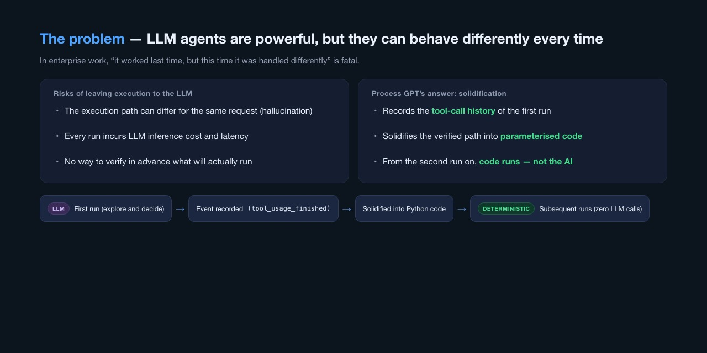
Why solidification
▶First Run — Recording the Tool-Call HistoryEvery MCP tool call in the first run is captured as an event1 screen
On the first run, the LLM agent interprets the instruction and calls MCP tools. Every tool call, such as SELECT→UPDATE→INSERT, is recorded without exception as a tool_usage_finished event.
ㆍUses the MCP servers registered to the tenant (e.g., Supabase MCP) ㆍRecords every tool call as an event ㆍShows execution statistics (inference count·elapsed time)
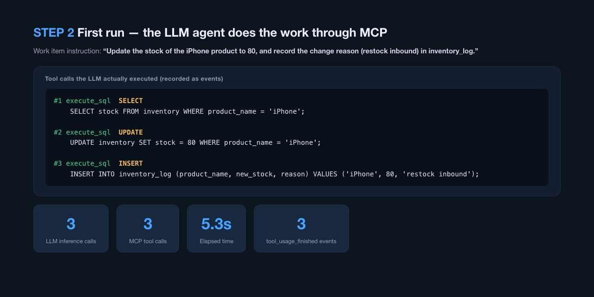
First run - the LLM agent performs the task via MCP
▶Solidification — The Execution Path Becomes Python CodeThe recorded history is converted into parameterized Python code1 screen
Parameterized execution code is generated from the recorded events and stored in the mcp_python_code table under a (process, activity, tenant) key. Business values are extracted as ${variable} templates for reuse.
Solidification - the execution path becomes Python code
▶Replay — Different Input, Same Path, Zero InferenceOnly the input changes; the path stays the same — zero LLM inference1 screen
When a new instruction arrives, only the values are extracted from the input and the solidified code runs as-is. With no agent crew to spin up and zero LLM inference, execution time in the demo dropped from 5.3 seconds to 3.2 seconds.
ㆍOnly parameter values are extracted from the new input ㆍPath·SQL structure are fixed in code ㆍ100% reproduction of the path steps
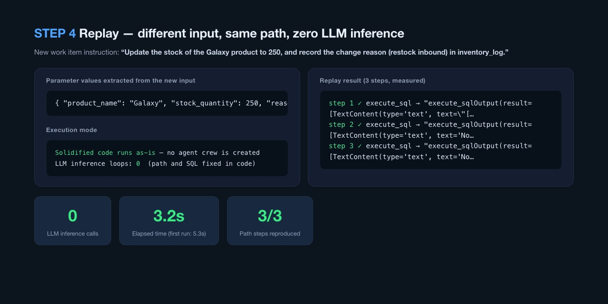
Replay - different input, same path, zero LLM inference
▶Transparent Verification of ResultsWhich steps ran, and how, stays visible on the task screen1 screen
A replayed task is shown as a ‘Deterministic Code Execution Result’ card. Which steps ran, and that the execution method was ‘solidified code (zero LLM inference)’, can be confirmed right on the task screen.
ㆍExecution steps·method are kept as part of the task result ㆍFirst-run/replay history managed from the task list ㆍLinked to the BPMN process view
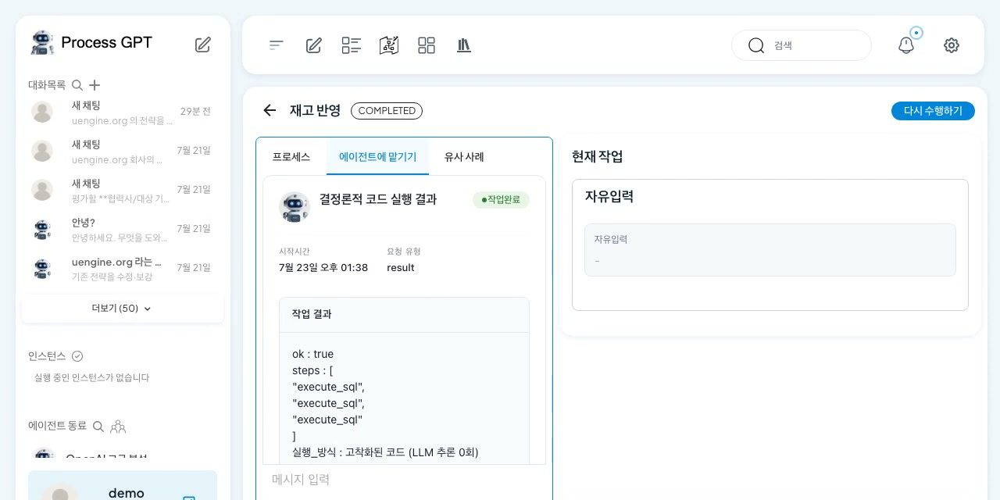
Deterministic code execution result
▶Verified All the Way to the Live DatabaseFirst run and replay write identical results to the real DB1 screen
Both the first (LLM) run and the second (solidified code) run are written to a live Supabase DB. The inventory table and audit log are recorded identically, passing all 21 E2E checks.
ㆍE2E verification 21/21 PASS ㆍCompensation (undo) code generated automatically — safe rollback ㆍAutomation without programming — the system writes its own code
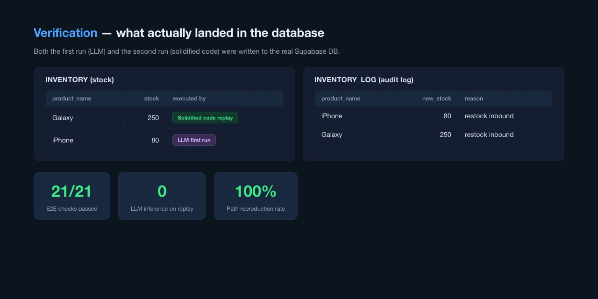
Verification of live database updates
Integration · Tool ManagementSafely attach internal systems and external tools to your agents
▶MCP HubNEWEnterprise MCP operations that go beyond pasting JSON13 screens
ㆍOrganized into four menus — MCP servers, gallery, observability, and integration standards — it actually connects before saving so you can see exactly which tools come in. ㆍBecause input schemas are stored too, permissions are granted per tool rather than per server, and irreversible tools can be blocked individually. ㆍConnection details accumulate as immutable snapshots, so you can roll back to a previous version instantly if something breaks, and standards compliance is graded A·B·C automatically before registration.
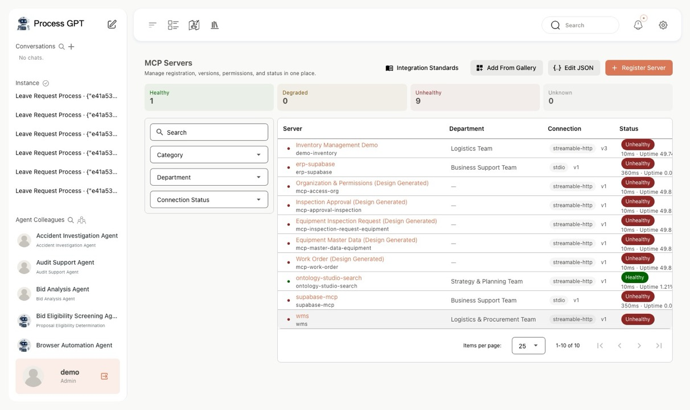
Server list — Live connection status
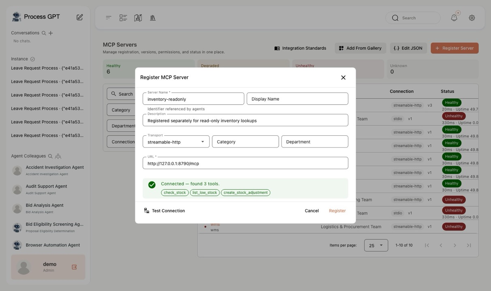
Connection test before registration
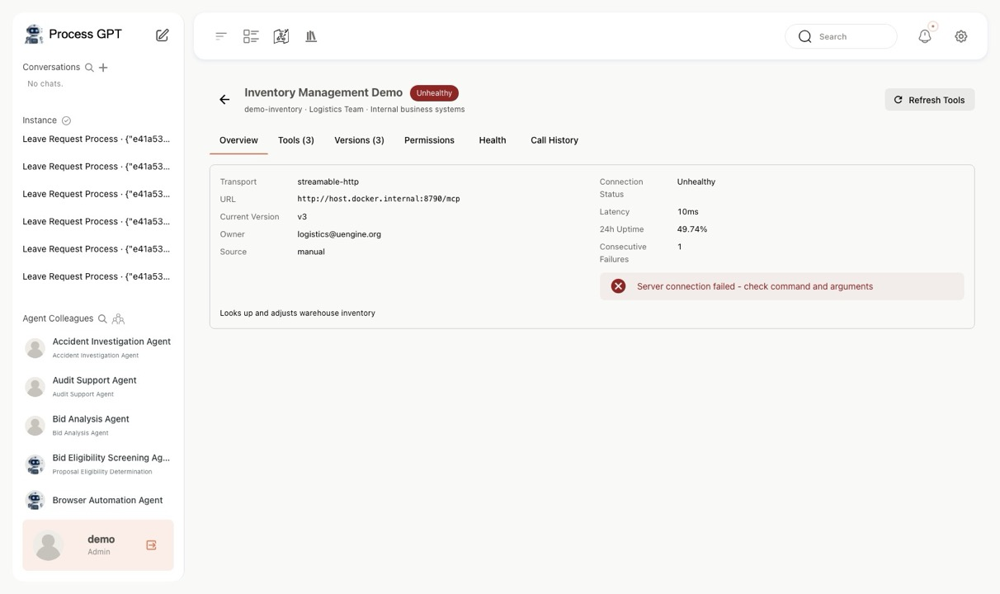
Server details — Latency, availability, consecutive failures
▶Agent Export · External RuntimesExecutable assets that plug into LangGraph and Crew AI
Export the agents you build in LangGraph or Crew AI format and connect them to your existing agent environments. The integration method, such as JSON, a Python module or an API endpoint, is reviewed to fit the target environment.
▶A2A Calls & Service ExposureAgent-to-agent calls and publishing servicesDemo video
ㆍAutomatically interprets the Open API specs and process data of internal and external systems and proposes an integration approach.
ㆍExposes Process GPT processes and agents as A2A services that external systems can call directly.
ㆍThe automatic integration structure makes it easy to build an execution environment that spans many systems.
Document · Voice InterfacesWork keeps moving even when you're not at a keyboard
▶HWPX (Korean Hangul) Documents Built by ConversationCreate and edit Hangul documents through dialogue2 screens
ㆍUpload an HWPX (Korean Hangul word-processor) template to the chat room and make a request; the agent drafts proposals, reports, and other documents to match the template automatically.
ㆍCheck the preview on screen and revise in conversational AI editing mode with requests like "Change the project title" or "Make this section longer".
ㆍDownload the finished document instantly as an HWPX file — Zero-Touch automation for public-sector and administrative document work.
▶Document Editor That Keeps the Original Format · Process GPT OfficeEdit Hangul, Word, Excel, PPT and PDF files with their formatting intact, and watch the agent writeVideo · 4 screens
ㆍHangul, Word, Excel, PowerPoint and PDF files attached to a task are opened and edited in their original format, with no conversion to a web page. Saving keeps the original and uploads the edited copy separately, and the task's attachment switches to the edited copy. The editor can be maximized or expanded to full screen.
ㆍThe editor's AI assistant receives the task step the document was opened in, along with the request from the previous step. Just saying "Polish it as the team lead asked" is enough for it to know what to change, and it leaves charts and heading styles as they are. The AI runs on the in-house language model server, so document content never leaves the company.
ㆍHand the work to a Process GPT agent in chat, and the agent finds the document that is open right now, fills in the blanks while the person watches, and saves it. A notice below the editor shows what the agent is doing.
ㆍThe editor is built on IeumOffice, open source under Apache 2.0, and ships with the original authors' notices and third-party licenses.
Demo (6 min 32 s, Korean narration and subtitles) · One Hangul draft goes from request → drafting → approval, and then an agent fills in an open Word report. Every screen is from a real run. · Watch on YouTube
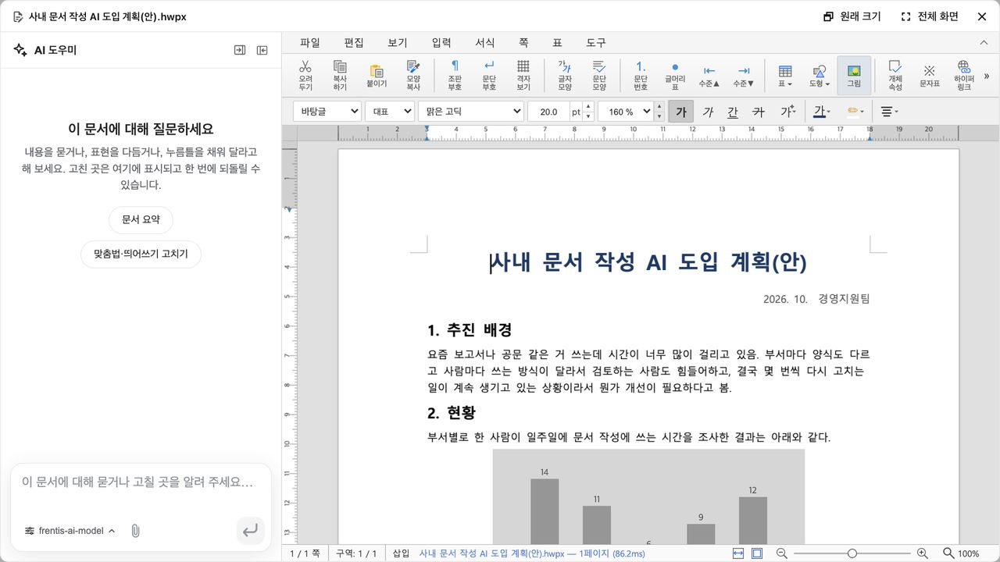
A Hangul draft in its original format — maximized editor
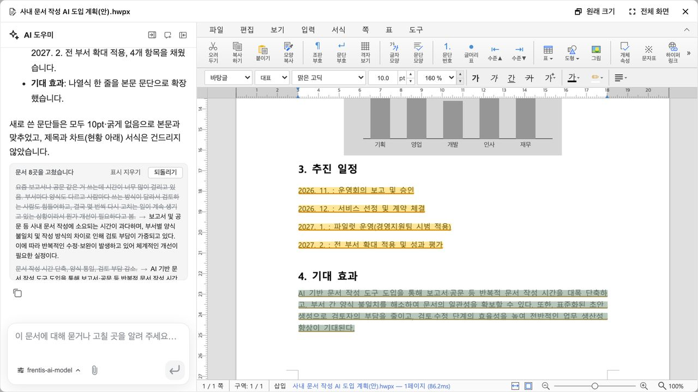
"As the team lead asked" — sections filled from the task context, with changes marked
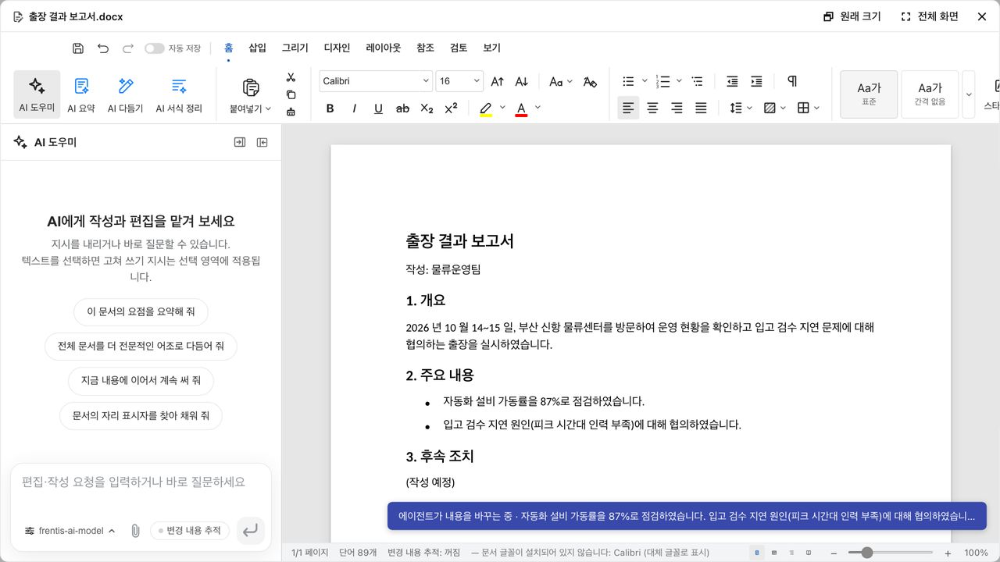
The chat agent filling in the open report
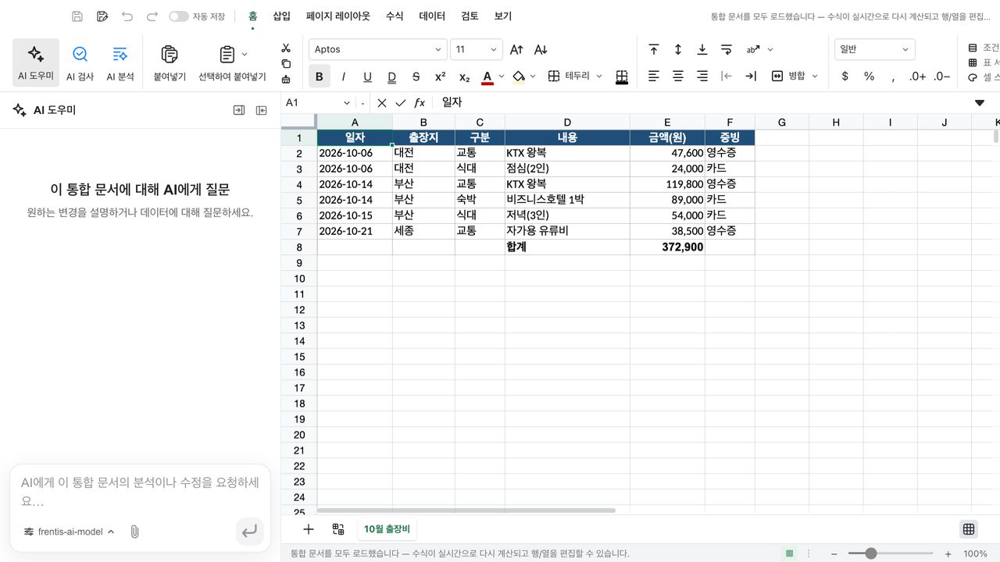
Excel, Word, PowerPoint and PDF in the same editor, with the same assistant
▶Hands-Free Work with the Voice AgentFill out task forms by speaking1 screen
ㆍTalk to AI by voice to fill out and submit business forms without a keyboard. (Powered by OpenAI Realtime · gpt-realtime)
ㆍThe agent automatically recognizes the task's web form context and fills in the appropriate fields based on your conversation.
ㆍEnjoy natural conversations: the agent detects overlapping speech, pauses, and immediately applies corrections such as "I misspoke".
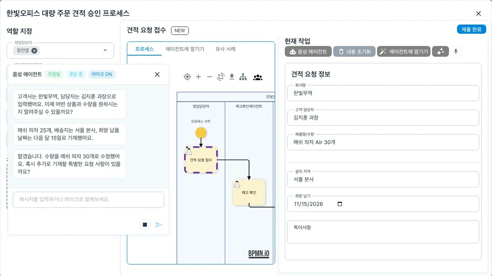
Quote request form filled out and corrected by voice
▶Call Bot: Processes Run over the PhonePhone interview results are recorded as-is2 screens
ㆍWhen the process advances and a user has a to-do, the agent places a call and conducts the task (such as an interview) directly. (Twilio CPaaS integration)
ㆍIt identifies and verifies the user by phone number, then walks them through and handles the pending work items on their worklist by conversation.
ㆍAnswers given during the call are recorded automatically into the task form and submitted, with built-in fallback handling for off-prompt responses.
Analytics · ObservabilityMake what was executed traceable and accountable
▶Execution ProfilerNEWDrill four levels deep into why an agent decided what it did8 screens
ㆍClick an instance row to open its total elapsed time and token cost, with the execution segments unfolded as a waterfall. ㆍWaterfall → task → language model call → tool call are chained parent-to-child, so you can see which decision invoked which tool. ㆍPrompts, responses, and tool arguments can be inspected verbatim; tokens and passwords are masked at storage time.
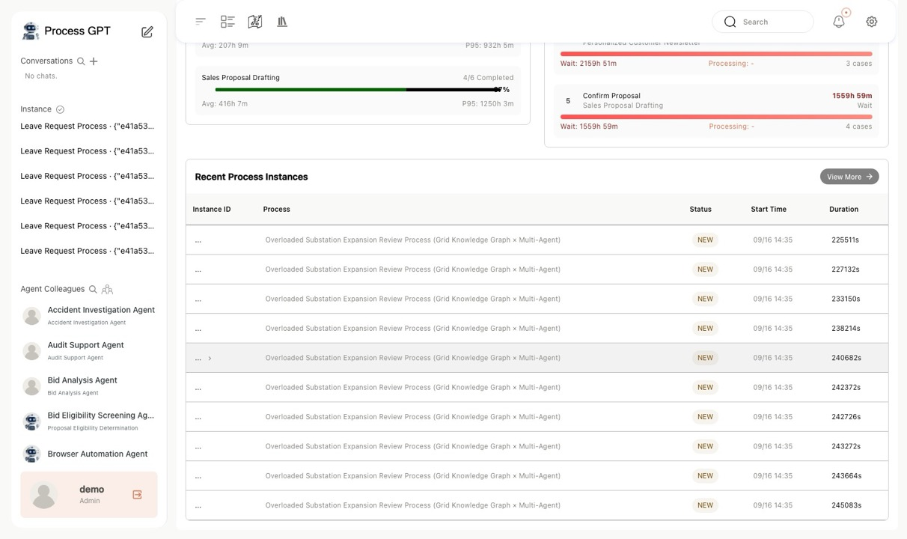
Process analytics instance listExecution Profiler — Elapsed time, tokens, cost
▶Lead Time BreakdownNEWWas that time spent by a person, by an agent, or waiting?7 screens
ㆍSplits total elapsed time into human decision, agent execution, and queue wait to pinpoint where to improve. ㆍBecause actual work time is often under 1% of lead time, there is a separate work-time axis, and collapsed waits remain as badges under the scale. ㆍAggregating many instances reveals bottlenecks at the definition level, and segments without evidence are left blank rather than invented.
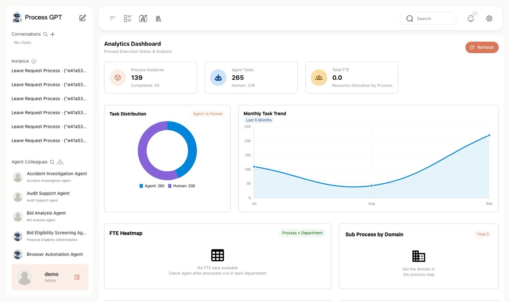
Process analytics dashboardLead time breakdown — 100% human decision
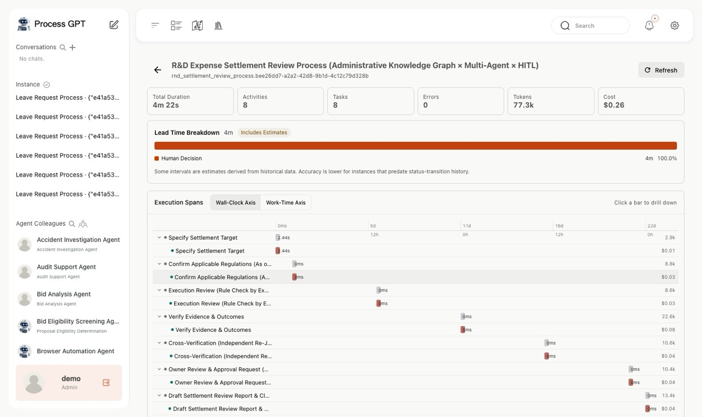
Real-time axis — Bars get squeezedWork-time axis — Only actual work is expanded
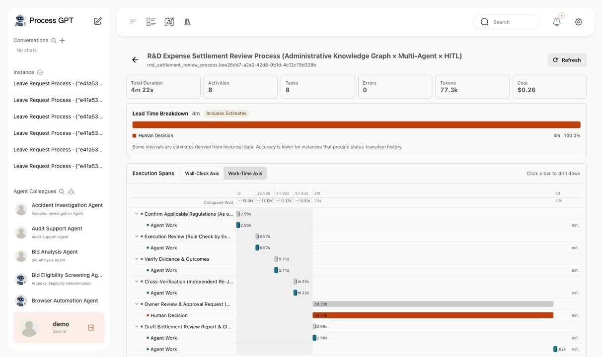
Agent (blue) vs. human review (orange)Language model spanTool span
▶Tool AnalyticsNEWA third analysis axis after process and people5 screens
ㆍTreats tools as a first-class analysis axis you can slice alongside process, department, and execution engine. ㆍStates coverage before showing any numbers, and hides the totals row for non-additive measures such as failure rate. ㆍDistinguishes the department that provides a tool from the departments that actually use it, exposing gaps between operational ownership and usage demand.
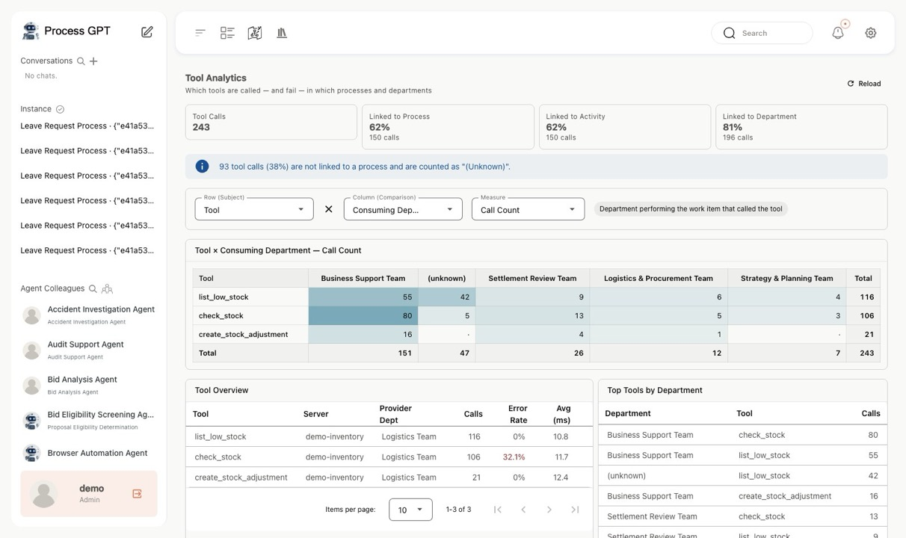
Coverage + tool × department cross-table
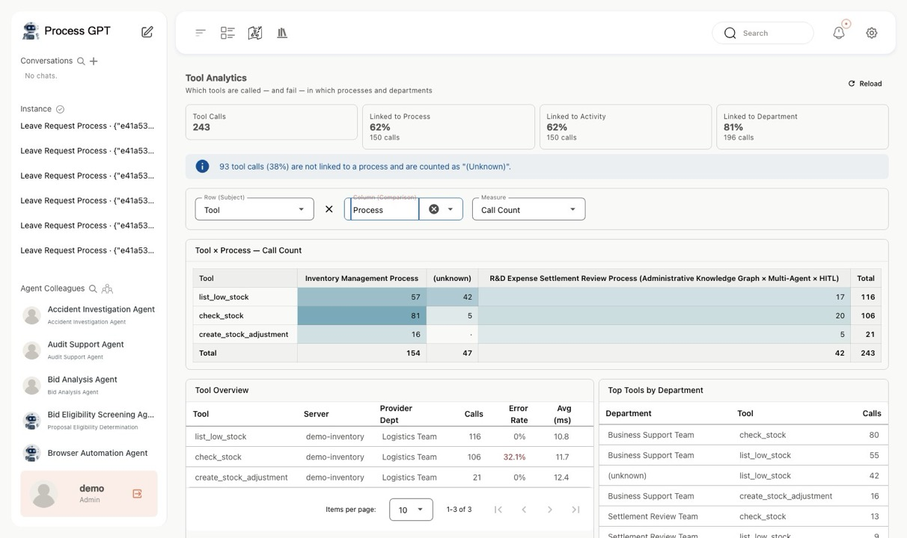
Axis switch dropdown
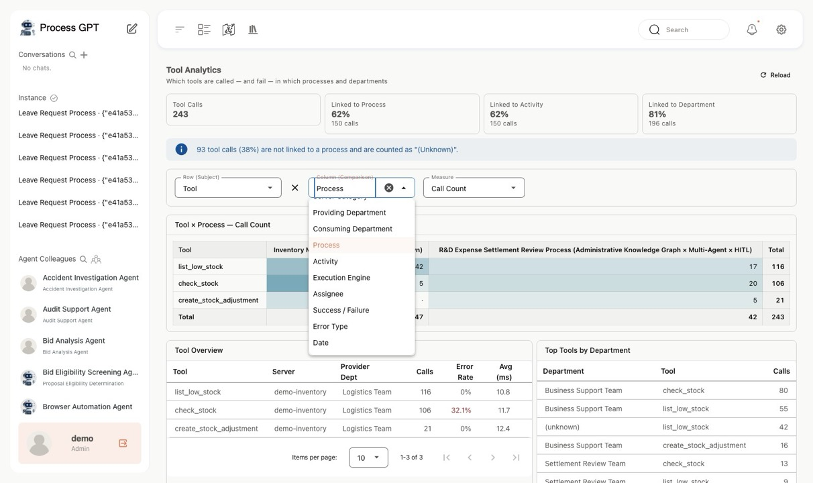
Tool usage by process axisFailure rate — Totals row disappearsPer-tool status and top department–tool combinations
Get to know Process GPT through video and conversation
Product overview video
Process GPT Podcast · Bringing AI into real work
01 · Why do AI pilots stall in real work?
Listen to two hosts discuss, in Korean, how Process GPT connects people, AI and existing systems. They walk through an invoice workflow example and four questions to ask before adoption.
An AI audio commentary generated by NotebookLM from the Process GPT product brochure and product description. The invoice workflow is a hypothetical design example to aid understanding; the actual scope of application is validated in each customer's environment.
Agent-based process execution is already being proven in real business operations at major Korean enterprises.
KEPCOKorea Electric Power Corporation
Overseas Business
Agent execution for generating legal·administrative documents in overseas business (successful PoC)
Turning document-intensive activities into AI agent activities inside the process
Challenge
Overseas power generation and transmission·distribution projects are document-intensive end to end: country-specific legal reviews, permit and administrative filings, contract documents, and more. Relying on individual staff experience meant long lead times and wide variation in deliverable quality.
Solution
The overseas business process was defined in BPMN, and the legal review and administrative document generation activities were deployed as AI agent activities. The agents draft documents by referencing internal regulations, standards, and country-specific materials, while staff only review, refine, and approve from the work item screen.
Results
PoC verified that document generation runs automatically inside process execution
Shorter drafting lead time; staff focus on review and judgment
Consistent formats and evidence — no more person-to-person quality variation
Generation history stays on the process instance for a full audit trail
SK telecomSK Telecom
OSS (Operations Support System)
AI-agent-driven OSS process capitalization and continuous improvement
Agents run the cycle of process identification → standards gap analysis → improvement
Challenge
OSS operations such as network design, provisioning, and fault response were scattered across teams and systems, with uneven documentation. It was hard to tell what counted as a process asset or where it stood against industry standards.
Solution
AI agents read existing operations documents, work history, and system information to identify the processes actually performed and structure them as BPMN process assets. They then automatically compare the identified processes against industry-standard process frameworks (eTOM and others) and present omissions, duplications, and inconsistencies in a gap analysis report.
Results
Scattered operations work accumulated as reusable process assets
Gaps against standards quantified and made visible — improvement priorities derived
A continuous improvement cycle of identify → compare → improve → re-identify established
Agents run it continuously, not people — assets never go stale
From document generation to process capitalization — agent execution proven in real enterprise operations.
Supply-Chain Demo ScenarioOne real cross-departmental case, taken all the way to the end
▶Supply-Chain Delivery Risk ResponseNEWOne incident spanning ERP, WMS, customs, and CRM, handled end to end9 screens
ㆍHandles a single customs hold as it ripples through procurement, inventory, purchasing, and customer support — all within one process. ㆍRather than centralizing data, it links it through the Ontology Studio knowledge graph and leaves computation to the source databases. ㆍAll agents are read-only; a person approves only the decisions that spend money, and that judgment is kept on record.
Four systems, four different item identifiersOntology knowledge graphRecords stay in the source systemsBPMN — Human lane and agent laneProcurement agent — Penalty calculation and evidenceInventory and purchasing agentsAlternate order approval (HITL)Drafting the customer replyEvery answer can be traced to its source
Process GPT is the axis that actually executes your organization's work.
The knowledge it judges by comes from the knowledge graph built by Ontology Studio,
and the monitoring and simulation in Ontologic Platform tell it when to act.
System changes that a process alone cannot absorb are handed to Robo Architect as specifications,
and for legacy systems with no API and only a screen, uEngine RPA becomes the hands and feet.
① Ontology Studio
The knowledge graph agents reference
The ontology that Ontology Studio builds from documents and databases is exposed as an MCP server,
and Process GPT's deep agents explore this knowledge graph in real time while performing work.
Because they decide only on the basis of explicit knowledge, the result is hallucination-free automation.
Explore legal·regulatory knowledge graphs at runtime via MCP (ontology_query)
Trustworthy agents that answer while citing the supporting provisions
Skills·DMN rules accumulated during execution flow back into the ontology
Decisions in the ontology, execution in Process GPT
Monitoring agents continuously evaluate conditions over operational data and, when a threshold is crossed, delegate the response to Process GPT.
If Ontologic is the brain that decides “when and why to act,”
Process GPT is the hands and feet that turn that decision into real work.
Threshold breach detected → process launched automatically
Proactive execution triggered by what-if forecast results
Process nodes in the ontology visualized and edited as BPMN
What a process can't absorb becomes a system change
Some requirements can't be solved just by wrapping work in a process; eventually the system itself has to change.
Robo Architect puts the specification (Spec), not the code, at the center,
and manages change from natural-language requirements through impact analysis → sandbox implementation → verification → rollout.
DDD·BDD-based change management through a proposal lifecycle
The same ontology shared as the basis for domain understanding
Requirements surfaced in processes connected to design and implementation
Some systems can't be reached through MCP or Open APIs.
With uEngine RPA, describe a repetitive task in words and AI builds the automation;
from then on a robot handles it daily with no AI cost — and it drops straight in as a step in your process.
550 automation components for web·Excel·PDF·email and more
AI cost once, at build time; every run after that is free
From automatic work-chart generation to agent orchestration, autonomous execution, control, and scaling — this is the Process-GPT architecture.
Find full details in the brochure (PDF).